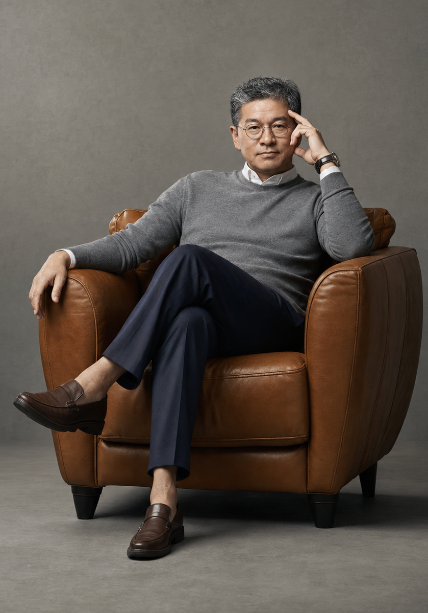
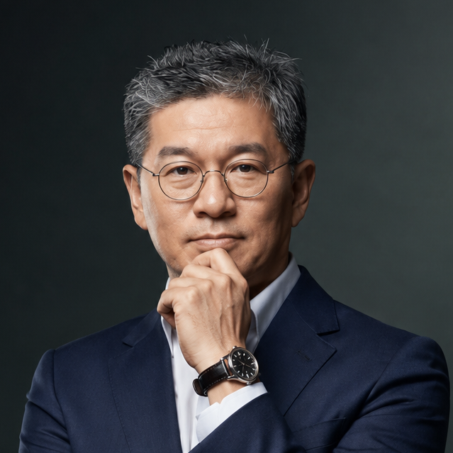

한의원 · 면역원기치료 · 무연쑥뜸기 · 한약제조คลินิกแพทย์แผนเกาหลี · เสริมภูมิคุ้มกัน · เครื่องรมยาไร้ควัน · ผลิตยาสมุนไพรPhòng khám Đông y · Tăng miễn dịch · Máy cứu ngải không khói · Sản xuất thuốc韩医院 · 免疫元气治疗 · 无烟艾灸器 · 韩药制造韓医院・免疫元気治療・無煙もぐさ灸・韓薬製造Korean Medicine Clinic · Immunity Care · Smokeless Moxibustion · Herbal Manufacturing
해밀한의원 원외탕전실에서는 공진단·경옥고·맞춤보약으로 면역 원기치료를 제공하며, 하니마을㈜의 무연쑥뜸기 마야구로 누구나 스스로 건강관리를 할 수 있도록 코칭합니다. 26년 한의원 운영과 21년 쑥뜸기 개발 경험을 바탕으로 고객의 건강과 삶의 질 향상에 헌신하고 있습니다.ที่ห้องปรุงยาของคลินิกแฮมิล เราให้การรักษาเสริมภูมิคุ้มกันและพลังชีวิตด้วยกงจินดัน คยองอกโก และยาบำรุงเฉพาะบุคคล และด้วยเครื่องรมยาไร้ควัน MAYAGU ของ Hanimaeul ทุกคนสามารถดูแลสุขภาพด้วยตนเองได้ ด้วยประสบการณ์บริหารคลินิก 26 ปี และพัฒนาเครื่องรมยา 21 ปี เราทุ่มเทเพื่อสุขภาพและคุณภาพชีวิตของลูกค้าTại xưởng bào chế của Phòng khám Haemil, chúng tôi cung cấp liệu pháp tăng cường miễn dịch và nguyên khí bằng Gongjindan, Gyeongokgo và thuốc bổ cá nhân hóa. Với máy cứu ngải không khói MAYAGU của Hanimaeul, ai cũng có thể tự chăm sóc sức khỏe. 26 năm điều hành phòng khám và 21 năm phát triển máy cứu ngải — chúng tôi tận tâm vì sức khỏe và chất lượng sống của khách hàng.Haemil韩医院院外汤煎室提供拱辰丹、琼玉膏及定制补药的免疫元气治疗；通过Hanimaeul的无烟艾灸器MAYAGU，让任何人都能自主管理健康。凭借26年韩医院运营与21年艾灸器研发经验，致力于提升客户的健康与生活品质。海密韓医院の院外湯煎室では、拱辰丹・瓊玉膏・オーダーメイド補薬で免疫元気治療を提供し、ハニマウルの無煙もぐさ灸MAYAGUで誰もが自分で健康管理できるようサポートします。26年の韓医院運営と21年のもぐさ灸開発経験をもとに、お客様の健康と生活の質向上に尽力しています。At Haemil Clinic's off-site herbal dispensary, we provide immunity and vitality care through Gongjindan, Gyeongokgo, and personalized herbal tonics. With Hanimaeul's smokeless moxibustion device MAYAGU, anyone can manage their health on their own. Backed by 26 years of clinical practice and 21 years developing moxibustion technology, we are dedicated to improving our customers' health and quality of life.
한 자리에서 26년, 직접 환자를 보고 처방해 왔습니다. 끊임없는 연구개발이 신뢰의 근거입니다.26 ปี ณ ที่เดิม ตรวจและจ่ายยาด้วยตนเองมาตลอด การวิจัยและพัฒนาอย่างไม่หยุดยั้งคือรากฐานของความไว้วางใจ26 năm tại cùng một nơi, trực tiếp khám và kê đơn. Nghiên cứu và phát triển không ngừng chính là cơ sở của niềm tin.在同一地点坚守26年，亲自诊察、亲自处方。不断的研发就是信赖的根据。同じ場所で26年、直接患者を診て処方してきました。絶え間ない研究開発が信頼の根拠です。26 years at the same location, personally examining and prescribing for patients. Continuous research and development is the foundation of our trust.
해밀한의원 원외탕전실은 제환(製丸) 파트 업계 1위입니다. 전국 고객 7,000개소의 한방병의원에 공진단·경옥고를 공급하고 있습니다.ห้องปรุงยานอกคลินิกของแฮมิลเป็นอันดับ 1 ในสายการผลิตยาลูกกลอน ส่งกงจินดันและคยองอกโกให้คลินิก/โรงพยาบาลแพทย์แผนเกาหลีกว่า 7,000 แห่งทั่วประเทศXưởng bào chế của Haemil đứng số 1 ngành viên hoàn, cung cấp Gongjindan và Gyeongokgo cho hơn 7.000 phòng khám / bệnh viện Đông y trên toàn quốc.Haemil院外汤煎室为制丸领域业界第一，向全国7,000家韩医院·韩方医院供应拱辰丹与琼玉膏。海密韓医院の院外湯煎室は製丸パート業界No.1です。全国7,000か所の韓方病医院に拱辰丹・瓊玉膏を供給しています。Haemil's off-site herbal dispensary is #1 in pill manufacturing, supplying Gongjindan and Gyeongokgo to 7,000 Korean medicine clinics and hospitals nationwide.
쑥뜸의 효과는 그대로 두고 연기·화상·냄새만 없앴습니다. 21년의 개발 끝에 안전하고 쾌적하며 효과 좋은 뜸기를 완성했습니다.คงประสิทธิภาพของการรมยาไว้ แต่ตัดควัน แผลไหม้ และกลิ่นออกไป หลังการพัฒนา 21 ปี จึงสำเร็จเป็นเครื่องรมยาที่ปลอดภัย สบาย และได้ผลดีGiữ nguyên hiệu quả cứu ngải nhưng loại bỏ khói, bỏng và mùi. Sau 21 năm phát triển, đã hoàn thiện một máy cứu ngải an toàn, dễ chịu và hiệu quả cao.保留艾灸功效，去除烟、烫伤与气味。经过21年研发，完成了安全、舒适且效果卓越的艾灸器。もぐさ灸の効果はそのままに煙・火傷・匂いだけをなくしました。21年の開発の末、安全で快適、効果の高い灸を完成させました。We kept the full effect of moxibustion while removing smoke, burns, and odor. After 21 years of development, we perfected a device that is safe, comfortable, and highly effective.
동의보감 원방 그대로의 배합에 개인 체질을 더합니다. 만성피로·면역저하·갱년기까지 증상이 아닌 원인부터 잡습니다.ยึดตำรับดั้งเดิมจากตงอึยโบกัม พร้อมปรับตามธาตุของแต่ละคน แก้ที่ต้นเหตุ ไม่ใช่แค่อาการ ทั้งอ่อนเพลียเรื้อรัง ภูมิคุ้มกันต่ำ และวัยทองGiữ đúng cổ phương Đông y Bảo giám, kết hợp thể chất từng người. Điều trị tận gốc mệt mỏi mạn tính, suy giảm miễn dịch và tiền mãn kinh.在《东医宝鉴》原方配伍基础上结合个人体质。慢性疲劳、免疫力低下、更年期，从根源而非症状入手。東医宝鑑の原方そのままの配合に、個人の体質を加えます。慢性疲労・免疫低下・更年期まで、症状ではなく原因から対処します。We combine the original Donguibogam formula with your individual constitution. From chronic fatigue to low immunity to menopause, we treat the root cause, not just the symptoms.
연기가 실내에 퍼지지 않는 특수 구조, 화상 걱정 없는 안전 온도 유지. 몸의 치료능력을 각성시키며, 자기 스스로 집중관리할 수 있습니다.โครงสร้างพิเศษที่ควันไม่ฟุ้งในห้อง รักษาอุณหภูมิปลอดภัยไม่ต้องกลัวแผลไหม้ ปลุกพลังการรักษาของร่างกาย ให้คุณดูแลตัวเองได้อย่างเข้มข้นด้วยตนเองCấu trúc đặc biệt không để khói lan trong phòng, giữ nhiệt độ an toàn không lo bỏng. Đánh thức khả năng tự chữa lành của cơ thể, giúp bạn tự chăm sóc tập trung cho chính mình.特殊结构使烟气不扩散于室内，维持安全温度无烫伤之忧。唤醒身体自愈能力，可自主进行集中管理。煙が室内に広がらない特殊構造、火傷の心配がない安全温度を維持。体の治癒力を目覚めさせ、自分自身で集中的にケアできます。A special structure keeps smoke from spreading indoors, and safe temperature control means no risk of burns. It awakens the body's natural healing ability, letting you manage your own care intensively.
명절·창립기념일 임직원 선물, VIP 고객 감사 선물. 10구 세트 단위로 대량 주문과 포장까지 함께 처리합니다.ของขวัญพนักงานช่วงเทศกาลหรือวันครบรอบบริษัท และของขวัญขอบคุณลูกค้า VIP รับออร์เดอร์จำนวนมากพร้อมบรรจุภัณฑ์ แบบเซ็ต 10 ชิ้นQuà tặng nhân viên dịp lễ, kỷ niệm thành lập, quà tri ân khách VIP. Nhận đơn số lượng lớn theo bộ 10 phần, bao gồm cả đóng gói.节日、创立纪念日员工礼品，VIP客户答谢礼。以10入礼盒为单位承接大批量订购及包装。節句・創立記念日の社員ギフト、VIP顧客への感謝ギフト。10個セット単位で大量注文から梱包まで対応します。Holiday and anniversary gifts for staff, thank-you gifts for VIP clients. We handle bulk orders and packaging together, in sets of 10.
굶는 다이어트가 아니라 소화·배변·대사를 함께 잡는 한방 프로그램. 체중이 내려가면서 컨디션은 올라갑니다.ไม่ใช่การอดอาหาร แต่เป็นโปรแกรมแพทย์แผนเกาหลีที่ดูแลการย่อย การขับถ่าย และเมแทบอลิซึมไปพร้อมกัน น้ำหนักลดลง แต่สภาพร่างกายดีขึ้นKhông phải nhịn ăn, mà là chương trình Đông y cải thiện đồng thời tiêu hóa, bài tiết và trao đổi chất. Cân nặng giảm, thể trạng lên.不是挨饿式减肥，而是同时调理消化、排便与代谢的韩方项目。体重下降，状态上升。無理な食事制限ではなく、消化・排便・代謝を同時にケアする韓方プログラム。体重は減り、コンディションは上がります。Not a starvation diet — a Korean medicine program that addresses digestion, elimination, and metabolism together. Weight goes down while your overall condition improves.
🏥 면역력 저하로 고민하시는 분 — 잔병치레가 잦고 만성피로·갱년기 증상이 있는 분🏥 ผู้ที่กังวลเรื่องภูมิคุ้มกันต่ำ — ป่วยบ่อย อ่อนเพลียเรื้อรัง หรือมีอาการวัยทอง🏥 Người lo lắng về suy giảm miễn dịch — hay ốm vặt, mệt mỏi mạn tính, triệu chứng tiền mãn kinh🏥 为免疫力低下困扰的人 — 常小病不断、慢性疲劳或有更年期症状者🏥 免疫力低下にお悩みの方 — 体調を崩しやすく、慢性疲労・更年期症状がある方🏥 Anyone concerned about low immunity — frequent minor illnesses, chronic fatigue, or menopause symptoms
💊 맞춤 보약·공진단 선물을 찾으시는 분 — 부모님·거래처 선물을 고민 중인 분💊 ผู้ที่มองหายาบำรุงเฉพาะบุคคลหรือกงจินดันเป็นของขวัญ — กำลังเลือกของฝากให้พ่อแม่หรือคู่ค้า💊 Người tìm thuốc bổ cá nhân hóa hoặc Gongjindan làm quà — đang cân nhắc quà cho cha mẹ, đối tác💊 寻找定制补药·拱辰丹礼品的人 — 正为父母或客户挑选礼物者💊 オーダーメイド補薬・拱辰丹ギフトをお探しの方 — ご両親や取引先へのギフトをご検討中の方💊 Anyone looking for a personalized tonic or Gongjindan gift — deciding on a gift for parents or business partners
🌿 스스로 쑥뜸관리를 원하시는 분 — 한의원에 자주 못 가지만 꾸준히 관리하고 싶은 분🌿 ผู้ที่อยากรมยาด้วยตนเอง — มาคลินิกบ่อยไม่ได้ แต่อยากดูแลต่อเนื่อง🌿 Người muốn tự cứu ngải — khó đến phòng khám thường xuyên nhưng muốn duy trì chăm sóc🌿 希望自行艾灸调理的人 — 无法常来医院却想持续管理者🌿 自分でもぐさ灸ケアをしたい方 — 韓医院に頻繁に通えないが継続的にケアしたい方🌿 Anyone who wants moxibustion self-care — can't visit a clinic often but wants consistent care
🏢 대량 보약선물을 구매하는 기업 — 명절·창립기념일 임직원 및 VIP 선물 담당자🏢 องค์กรที่ซื้อของขวัญยาบำรุงจำนวนมาก — ผู้ดูแลของขวัญพนักงานและลูกค้า VIP🏢 Doanh nghiệp mua quà thuốc bổ số lượng lớn — người phụ trách quà tặng nhân viên và khách VIP🏢 采购大批量补药礼品的企业 — 负责节日、周年员工及VIP礼品的人🏢 大量補薬ギフトを購入する企業 — 節句・創立記念日の社員向けおよびVIPギフト担当者🏢 Companies purchasing bulk herbal gifts — those managing holiday, anniversary, or VIP client gifts
🤝 한의원·한약제조 협업을 원하는 한방병의원 — 원외탕전 위탁제조, 마야구 유통·수출 파트너🤝 คลินิก/โรงพยาบาลแพทย์แผนเกาหลีที่ต้องการร่วมมือด้านผลิตยาสมุนไพร — รับจ้างผลิต หรือเป็นพาร์ตเนอร์จัดจำหน่าย/ส่งออก MAYAGU🤝 Phòng khám / Bệnh viện Đông y muốn hợp tác sản xuất thuốc — gia công bào chế, đối tác phân phối & xuất khẩu MAYAGU🤝 希望与韩药制造合作的韩医院·韩方医院 — 院外汤煎委托生产、MAYAGU经销与出口伙伴🤝 韓医院・韓薬製造の協業を希望する韓方病医院 — 院外湯煎の委託製造、MAYAGU流通・輸出パートナー🤝 Korean medicine clinics/hospitals seeking a manufacturing partnership — contract dispensary production, MAYAGU distribution & export partners
26년 한의원 운영 · 원외탕전 제환 파트 업계 1위 · 고객 7,000개소의 한방병의원 공급บริหารคลินิก 26 ปี · อันดับ 1 ด้านการผลิตยาลูกกลอน · ส่งให้คลินิก/โรงพยาบาลแพทย์แผนเกาหลีกว่า 7,000 แห่ง26 năm điều hành phòng khám · Số 1 ngành viên hoàn · Cung cấp cho hơn 7.000 phòng khám / bệnh viện Đông y26年韩医院运营 · 制丸领域业界第一 · 供应7,000家韩医院·韩方医院26年の韓医院運営・院外湯煎 製丸パート業界No.1・7,000か所の韓方病医院へ供給26 years running the clinic · #1 in off-site herbal pill manufacturing · Supplying 7,000 Korean medicine clinics and hospitals
전국 고객 7,000개소의 한방병의원에 공진단·경옥고 공급ส่งกงจินดันและคยองอกโกให้คลินิก/โรงพยาบาลแพทย์แผนเกาหลีกว่า 7,000 แห่งทั่วประเทศCung cấp Gongjindan · Gyeongokgo cho hơn 7.000 phòng khám / bệnh viện Đông y trên toàn quốc向全国7,000家韩医院·韩方医院供应拱辰丹·琼玉膏全国7,000か所の韓方病医院へ拱辰丹・瓊玉膏を供給Supplying Gongjindan and Gyeongokgo to 7,000 Korean medicine clinics and hospitals nationwide
21년 개발 · 국내 제조 · 각종 전시 참가 및 강의 활동พัฒนา 21 ปี · ผลิตในเกาหลี · ร่วมงานแสดงสินค้าและบรรยายต่าง ๆ21 năm phát triển · Sản xuất tại Hàn Quốc · Tham gia triển lãm và giảng dạy21年研发 · 韩国制造 · 参加各类展会与讲座活动21年の開発・国内製造・各種展示会参加および講義活動21 years of development · Made in Korea · Exhibitions and lecturing
한의원, 한방병원 난치 면역질환자, 체력저하 및 헬스뷰티 사업자 분과 · 신뢰 기반 리퍼럴 네트워크로 검증된 소개를 주고받습니다.หมวดคลินิกแพทย์แผนเกาหลี โรงพยาบาลแพทย์แผนเกาหลีสำหรับผู้ป่วยภูมิคุ้มกันเรื้อรังรักษายาก ผู้ที่มีพลังกายอ่อนแอ และผู้ประกอบการด้านสุขภาพความงาม — แลกเปลี่ยนการแนะนำที่ตรวจสอบได้ผ่านเครือข่ายที่ไว้ใจได้Nhóm ngành Phòng khám Đông y, Bệnh viện Đông y điều trị bệnh miễn dịch khó chữa, người suy nhược thể lực và doanh nghiệp sức khỏe - làm đẹp — trao đổi giới thiệu đã kiểm chứng qua mạng lưới tin cậy.韩医院、韩方医院难治性免疫疾病患者、体力低下及健康美容行业从业者分科 — 通过以信赖为基础的推荐网络交换经过验证的介绍。韓医院、韓方病院の難治性免疫疾患患者、体力低下およびヘルス&ビューティー事業者分科・信頼に基づくリファーラルネットワークで検証された紹介をやり取りします。Category: Korean medicine clinics, hospitals for hard-to-treat immune conditions, physical fatigue, and health & beauty businesses · Exchanging verified referrals through a trust-based network.